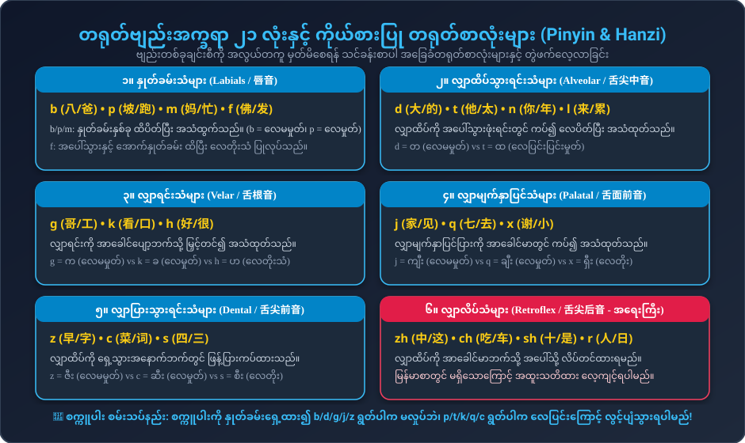
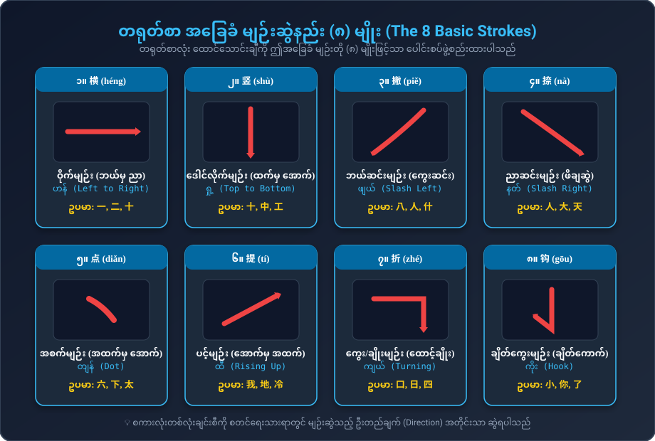
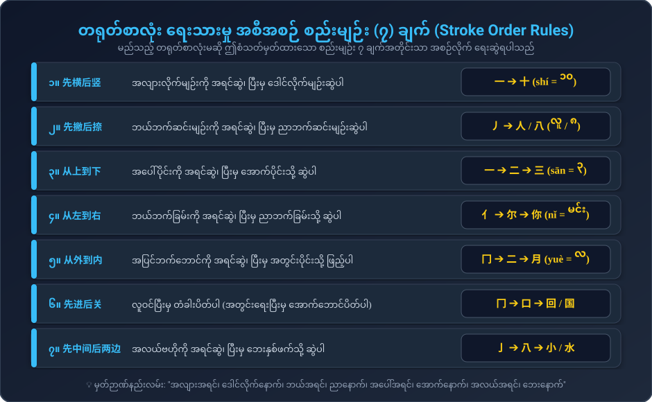

တရုတ်စာစတင်လေ့လာသူတိုင်း မဖြစ်မနေ သိရှိထားရမည့် ဗျည်းအက္ခရာ ၂၁ လုံး၏ နှုတ်ခမ်း/လျှာ အနေအထား၊ လေမှုတ်သံခွဲခြားနည်းများနှင့် တရုတ်စာလုံး အခြေခံမျဉ်း ၈ မျိုး၊ မျဉ်းဆွဲအစီအစဉ် စည်းမျဉ်း ၇ ချက်။
တရုတ်ဗျည်းအက္ခရာများကို အင်္ဂလိပ်စာလုံးများကဲ့သို့ ရိုးရိုးမဖတ်ဘဲ၊ နှုတ်ခမ်း၊ သွား၊ လျှာနှင့် လေထွက်ပေါက် အနေအထားအတိုင်း အတိအကျ အသံထုတ်ရပါသည်:

အင်္ဂလိပ်စာတွင် b နှင့် p သည် အသံပြင်း/အသံပျော့ ကွာခြားသော်လည်း၊ တရုတ်စာတွင် "လေမှုတ်ထုတ်ခြင်း ရှိ/မရှိ" ဖြင့်သာ ခွဲခြားပါသည်။ နှုတ်ခမ်းရှေ့တွင် စက္ကူပါးတစ်ရွက် ထား၍ စမ်းသပ်ကြည့်ပါ:
တရုတ်ပြည်မကြီး (၁၉၅၈ Pinyin မတိုင်မီ) နှင့် ထိုင်ဝမ်တို့တွင် အသုံးပြုသော ရိုးရာ ဗျည်းသင်္ကေတ ၂၁ လုံး (နှိပ်၍ အသံနားထောင်နိုင်ပါသည်)
တရုတ်စာလုံးများသည် ကျပန်းဆွဲထားသော ပုံများမဟုတ်ဘဲ၊ စနစ်တကျ အခြေခံမျဉ်း ၈ မျိုး နှင့် ရေးသားမှု စည်းမျဉ်း ၇ ချက် ဖြင့် တိတိကျကျ ဖွဲ့စည်းထားပါသည်:

တရုတ်စာလုံးတစ်လုံးကို စိတ်ကြိုက်နေရာမှ စတင်မရေးရပါ။ အောက်ပါ ၇ ချက်အတိုင်း တိကျစွာ ရေးဆွဲရပါသည်:

သင်ခန်းစာ ၁၊ ၂၊ ၃ တွင် သင်ယူခဲ့ရသော စာလုံးများကို ဥပမာယူ၍ စာလုံးဖွဲ့စည်းပုံ အမျိုးအစား ၄ မျိုးကို လေ့လာကြည့်ပါ:
ဘယ်ဘက်တွင် အဓိပ္ပာယ်ပြ အမှတ်အသား (Radical) နှင့် ညာဘက်တွင် အသံထွက်ပြ အစိတ်အပိုင်း ပါဝင်သည်။
• 你: `亻` (လူ) + `尔` = မင်း
• 好: `女` (မိခင်) + `子` (ကလေး) = ကောင်းမွန်ခြင်း
• 忙: `忄` (နှလုံးသား/စိတ်) + `亡` (မရှိတော့) = စိတ်လွတ်သည်အထိ အလုပ်များခြင်း
အပေါ်ခြမ်းကို အရင်ရေးပြီး အောက်ခြေကို နောက်မှ ရေးဆွဲသည်။
• 您: `你` (မင်း) + `心` (နှလုံးသား) = ရင်ထဲမှ လေးစားသော အခေါ် (ခင်ဗျား/ရှင်)
• 爸: `父` (ဖခင်) + `巴` = အဖေ
• 早: `日` (နေမင်း) + `十` (မြေပြင်မှ ထွက်ပေါ်) = နံနက်စောစော
အပြင်ဘက်ဘောင် ၃ ခြမ်းကို အရင်ဆွဲ၊ အတွင်းစာလုံးကို ရေးပြီးမှ အောက်ခြေဘောင်ကို ပိတ်ရသည် (先里头后关门)။
• 回 (huí): အပြင်ဘောင် $\to$ အတွင်း `口` $\to$ အောက်ခြေပိတ်မျဉ်း
အခြားစာလုံးများနှင့် ပေါင်းစပ်မထားဘဲ ရှေးခေတ်ရုပ်ပုံသင်္ကေတမှ တိုက်ရိုက်ဆင်းသက်လာသော အခြေခံစာလုံးများ ဖြစ်သည်။ ဤစာလုံးများသည် အခြားစာလုံးကြီးများ၏ အမြစ် (Radicals) များ ဖြစ်လာကြသည်။
အသံထွက်နှင့် မျဉ်းဆွဲစည်းမျဉ်းများကို စမ်းသပ်ဖြေဆိုကြည့်ပါ
မေးခွန်း (၁): တရုတ်ဗျည်း "b" နှင့် "p" ၏ အဓိက ကွာခြားချက်မှာ အဘယ်နည်း?
မေးခွန်း (၂): တရုတ်ဂဏန်း "ဆယ် (十)" ကို ရေးဆွဲရာတွင် မည်သည့်မျဉ်းကို အရင်ဆွဲရမည်နည်း?
မေးခွန်း (၃): "zh, ch, sh, r" ဗျည်းများကို အသံထွက်ရာတွင် လျှာကို မည်သို့ ထားရမည်နည်း?